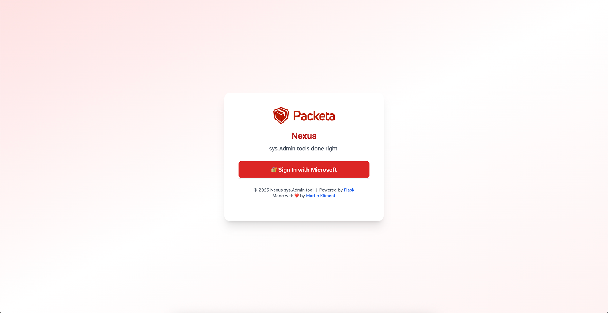
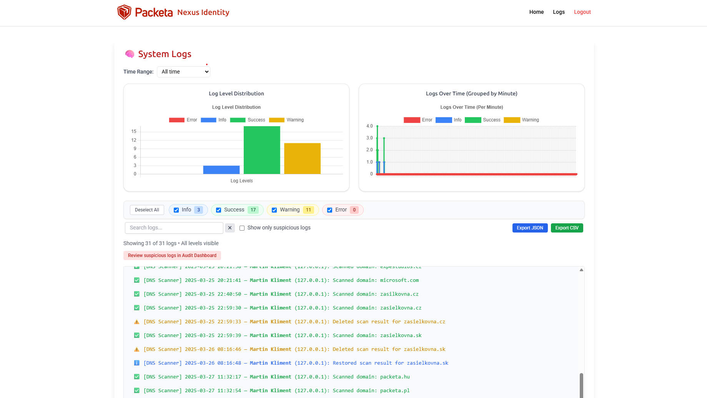
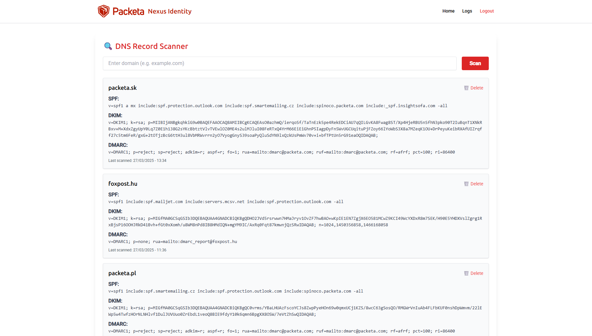
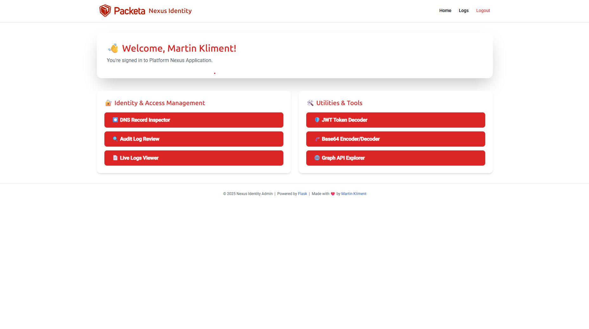

Projekty & Ukázky práce
Nexus Identity Admin
Webový nástroj vytvořený pro systémové administrátory, který zjednodušuje správu Microsoft Entra, Intune a dalších služeb. Nabízí real-time logy, audit dashboard, možnost spouštět PowerShell skripty, integrované napojení na Graph API a další funkce zaměřené na bezpečnost a efektivitu.
- Moderní responzivní UI (světlý/tmavý režim)
- Filtrování a export logů, auditování podezřelých aktivit
- Správa zařízení, DNS a uživatelských dat přes Graph API
- Navrženo s podporou více databázových backendů – výchozí je SQLite, ale připraven pro PostgreSQL i MySQL




Python (Flask)
Tailwind CSS
JavaScript (ES Modules)
Graph API
Azure AD
SQLite
PostgreSQL (ready)
MySQL (optional)
HomeLab Automation Toolkit
Projekt zaměřený na automatizované nasazení infrastruktury v domácím labu. Kombinuje sílu Terraformu, Proxmox API, cloud-init a Ansible pro rychlé a opakovatelné nasazení testovacích i produkčních prostředí. Používáno při vývoji a testování bezpečnostních scénářů i skriptování.
- Automatické vytváření VM přes Proxmox API s custom cloud-init ISO
- Terraform moduly pro provisioning a síťování
- Ansible role pro konfiguraci, SSH access a instalaci nástrojů
- Podpora více image šablon (Ubuntu, Debian, Alpine, Windows)
- Ideální základna pro testování automatizací, MDM a bezpečnostních scénářů

Proxmox
Terraform
Ansible
Cloud-Init
ISO Customization
Linux